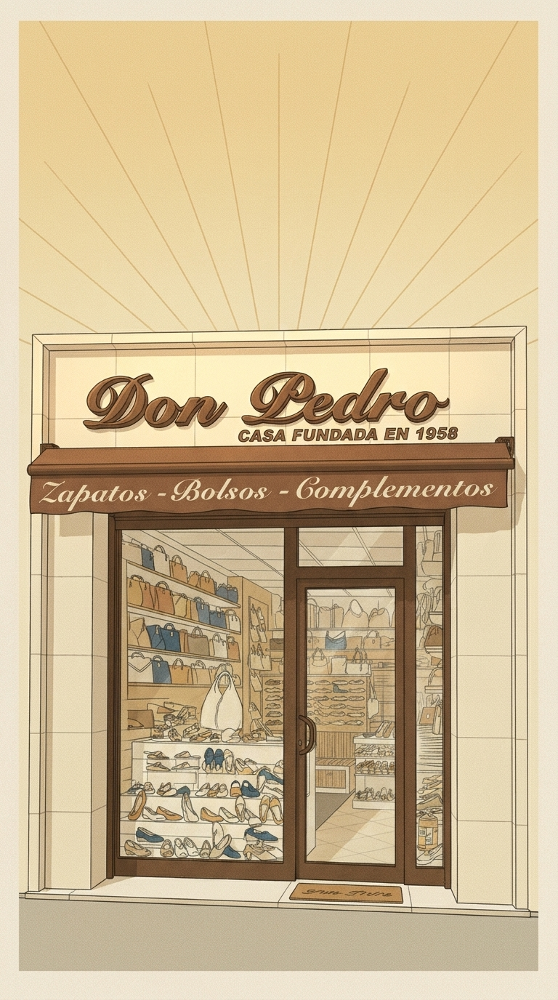
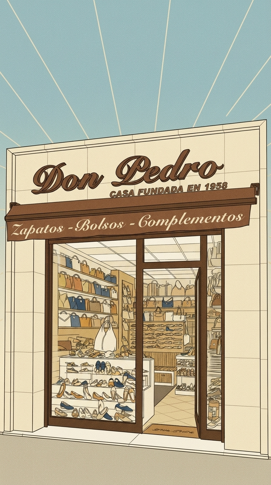
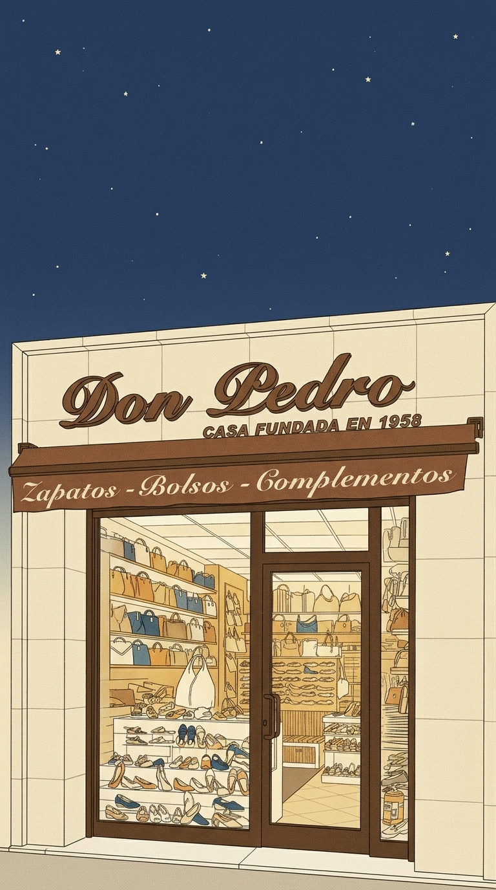

1 Same illustration style as the FIRST reference image (clean-line mid-century Spanish commercial poster look: thin dark ink outlines, flat colour areas, subtle printed grain). Same shop facade as the references: cream stone-tiled facade; large cursive brown 3D letters reading exactly "Don Pedro" with "CASA FUNDADA EN 1958" underneath; brown fabric awning with cream cursive text exactly "Zapatos - Bolsos - Complementos"; big shop window on the left full of colourful generic women shoes and leather handbags on white shelves; glass door with dark brown frame on the right, CLOSED, interior softly visible through the glass; a doormat.
CHANGES: vertical portrait 9:16 image; strictly frontal straight-on elevation view (no perspective angle, the facade parallel to the picture plane, perfectly vertical door edges); the shop facade fills the full width and occupies the lower 58 percent of the image, standing on a strip of sidewalk; the upper 42 percent is open sky with NO objects and NO text (a title will be placed there later). No fire extinguisher, no security camera, no alarm box, no stickers, no people, no extra text anywhere.
Palette: leather brown #816040, cream #F1E6B2, gold #CEB888, navy #2E4674, off-white #FBF7EA, ink #2B2118.
SKY AND LIGHT: pale blue sky exactly like the first reference image, with thin cream sun rays radiating from behind the building.

2 Same illustration style as the FIRST reference image (clean-line mid-century Spanish commercial poster look: thin dark ink outlines, flat colour areas, subtle printed grain). Same shop facade as the references: cream stone-tiled facade; large cursive brown 3D letters reading exactly "Don Pedro" with "CASA FUNDADA EN 1958" underneath; brown fabric awning with cream cursive text exactly "Zapatos - Bolsos - Complementos"; big shop window on the left full of colourful generic women shoes and leather handbags on white shelves; glass door with dark brown frame on the right, CLOSED, interior softly visible through the glass; a doormat.
CHANGES: vertical portrait 9:16 image; strictly frontal straight-on elevation view (no perspective angle, the facade parallel to the picture plane, perfectly vertical door edges); the shop facade fills the full width and occupies the lower 58 percent of the image, standing on a strip of sidewalk; the upper 42 percent is open sky with NO objects and NO text (a title will be placed there later). No fire extinguisher, no security camera, no alarm box, no stickers, no people, no extra text anywhere.
Palette: leather brown #816040, cream #F1E6B2, gold #CEB888, navy #2E4674, off-white #FBF7EA, ink #2B2118.
SKY AND LIGHT: warm cream-and-gold late-afternoon sky (#F1E6B2 to #CEB888) with thin sun rays, warm light falling on the facade.

3 Same illustration style as the FIRST reference image (clean-line mid-century Spanish commercial poster look: thin dark ink outlines, flat colour areas, subtle printed grain). Same shop facade as the references: cream stone-tiled facade; large cursive brown 3D letters reading exactly "Don Pedro" with "CASA FUNDADA EN 1958" underneath; brown fabric awning with cream cursive text exactly "Zapatos - Bolsos - Complementos"; big shop window on the left full of colourful generic women shoes and leather handbags on white shelves; glass door with dark brown frame on the right, CLOSED, interior softly visible through the glass; a doormat.
CHANGES: vertical portrait 9:16 image; strictly frontal straight-on elevation view (no perspective angle, the facade parallel to the picture plane, perfectly vertical door edges); the shop facade fills the full width and occupies the lower 58 percent of the image, standing on a strip of sidewalk; the upper 42 percent is open sky with NO objects and NO text (a title will be placed there later). No fire extinguisher, no security camera, no alarm box, no stickers, no people, no extra text anywhere.
Palette: leather brown #816040, cream #F1E6B2, gold #CEB888, navy #2E4674, off-white #FBF7EA, ink #2B2118.
SKY AND LIGHT: pale blue sky with thin cream sun rays, and slightly stronger printed grain texture over the whole image.

4 Same illustration style as the FIRST reference image (clean-line mid-century Spanish commercial poster look: thin dark ink outlines, flat colour areas, subtle printed grain). Same shop facade as the references: cream stone-tiled facade; large cursive brown 3D letters reading exactly "Don Pedro" with "CASA FUNDADA EN 1958" underneath; brown fabric awning with cream cursive text exactly "Zapatos - Bolsos - Complementos"; big shop window on the left full of colourful generic women shoes and leather handbags on white shelves; glass door with dark brown frame on the right, CLOSED, interior softly visible through the glass; a doormat.
CHANGES: vertical portrait 9:16 image; strictly frontal straight-on elevation view (no perspective angle, the facade parallel to the picture plane, perfectly vertical door edges); the shop facade fills the full width and occupies the lower 58 percent of the image, standing on a strip of sidewalk; the upper 42 percent is open sky with NO objects and NO text (a title will be placed there later). No fire extinguisher, no security camera, no alarm box, no stickers, no people, no extra text anywhere.
Palette: leather brown #816040, cream #F1E6B2, gold #CEB888, navy #2E4674, off-white #FBF7EA, ink #2B2118.
SKY AND LIGHT: early evening, deep navy blue sky (#2E4674) with a few small cream stars, shop window and door glowing with warm yellow light from inside.